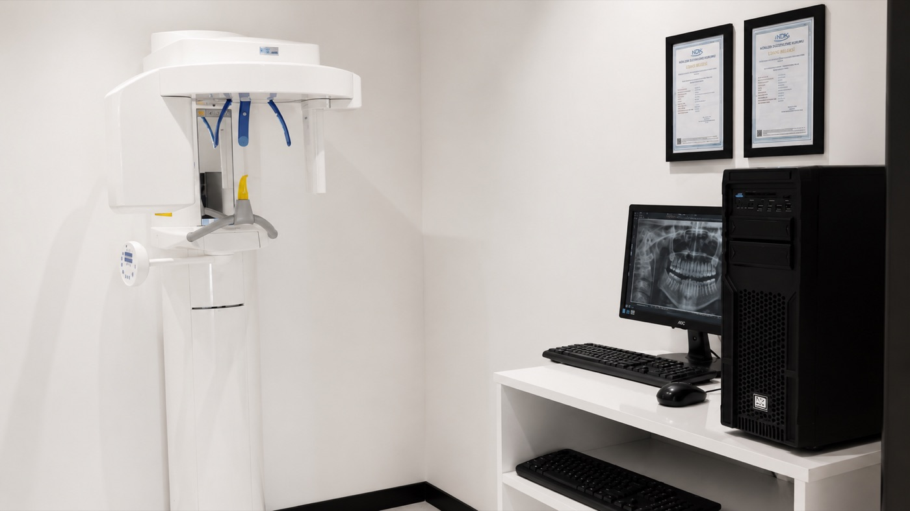
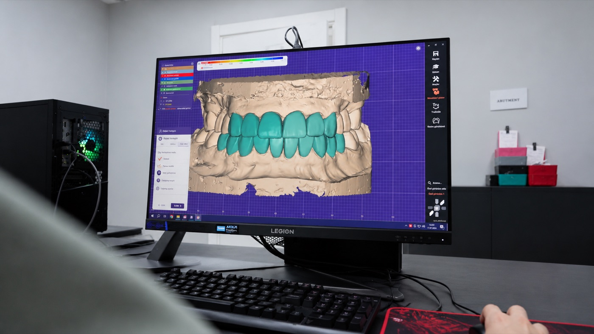
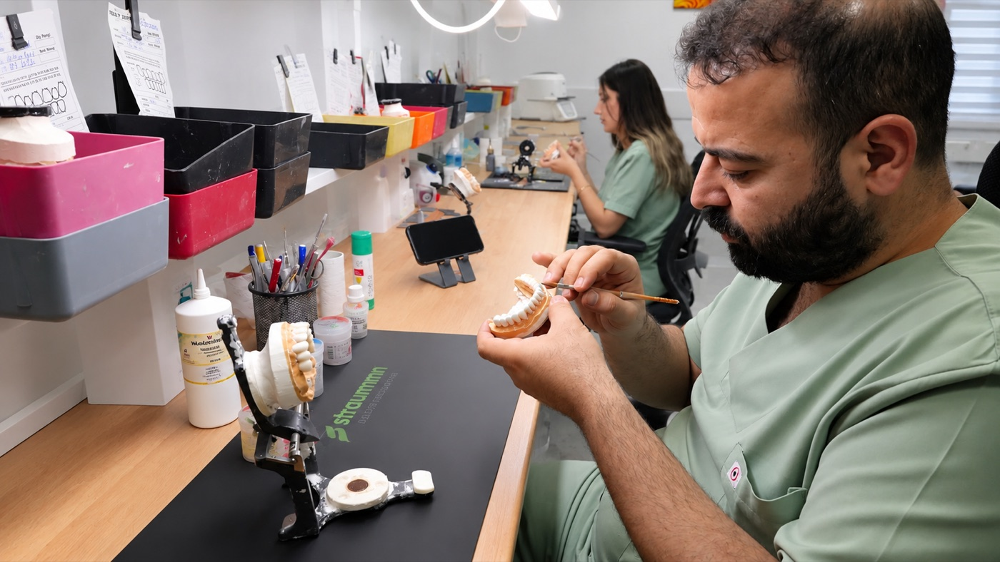

Un diagnóstico correcto y un resultado predecible empiezan con el equipamiento adecuado. En nuestra clínica, el diagnóstico por imagen, la toma de impresiones y la fabricación siguen un flujo de trabajo digital; desde la planificación hasta la restauración, el proceso permanece bajo control de la clínica.
Imagen tridimensional
El diagnóstico y la planificación quirúrgica se realizan con radiografía digital y tomografía volumétrica. La imagen tridimensional permite una evaluación detallada de la estructura ósea y de los detalles anatómicos, lo que posibilita una planificación más segura, sobre todo en implantes y procedimientos quirúrgicos.

Escáner intraoral digital
Las impresiones se toman de forma digital con escáneres intraorales; no se necesita la cubeta de impresión tradicional. Este método aumenta la comodidad del paciente y proporciona un registro más preciso.
Diseño digital
El plan de tratamiento y las restauraciones se diseñan en pantalla. El flujo de trabajo digital favorece la coherencia y la reproducibilidad desde la planificación hasta la fabricación.

Laboratorio dentro de la clínica
Las carillas, coronas y puentes se fabrican en el laboratorio de la propia clínica. Las fresadoras, los hornos de sinterizado y el banco de cerámica están dentro de la clínica; no se envía ningún trabajo al exterior. Esto permite que el proceso de fabricación permanezca de principio a fin bajo el control de la clínica.

Trabajo de precisión
En los procedimientos minuciosos, nuestros odontólogos trabajan con sistemas de magnificación cuando es necesario. Esto favorece la atención al detalle y la precisión.
¿Desea preguntar algo sobre nuestra tecnología y nuestros procesos? Puede escribirnos a cualquier hora.
Escríbanos